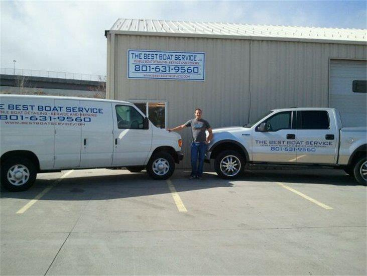

Employement Experience
|
Title |
Company |
Start/End Date |
Duties |
|
Cisco Voice Contractor |
Goldman Sachs |
Jan 2019 - Present |
I currently provision, deprovision, and troubleshoot cisco phones through Cisco's Unified Communications Manager and various other Goldman Sachs internal tools. I work through an internal ticketing system to ensure numbers, voicemails, hotlines, and intercoms, are provisioned and working correctly. |
|
Desktop Engineer |
Teleperformance |
Jul 2017 - Jan 2019 |
Through preventative maintenance and troubleshooting efforts, I manage and provide IT desktop support for a site of 1100 computers. I was the go-to engineer for all computer related issues and assisted other Departments as needed. |
|
Supervisor; New Hire Supervisor |
Teleperformance |
Apr 2012 - Jul 2017 |
After some time taking calls and building my communication skills, I was promoted to a supervisor position where I lead a team of 20 customer service representatives in the banking industry. I moved floors a lot to help out departments where needed and was able to lead a wide variety of different people and gain experience with credit cards, loans and then deposit accounts.
I was then promoted to a new hire supervisor where I took representatives from their training classes and introduced them to the call environment for the first 3 weeks of their production time. |
|
Ski/Snowboard Instructor |
RideUT |
Nov 2011 - Mar 2015 |
Teaching Skiing and Snow Boarding in a class or one-on-one setting. Ensuring client safety while providing an enjoyable learning experience. |
|  |
Manager |
The Best Boat Service |
Jan 2012 - Sep 2012 |
Maximizing business efficiency by ensuring client work orders are finished in a timely manner. Supervising employees to make sure that company policy is being followed and a clean work environment is kept. Using great customer services skills to handle client issues in a professional manner and ensuring top customer satisfaction results. |